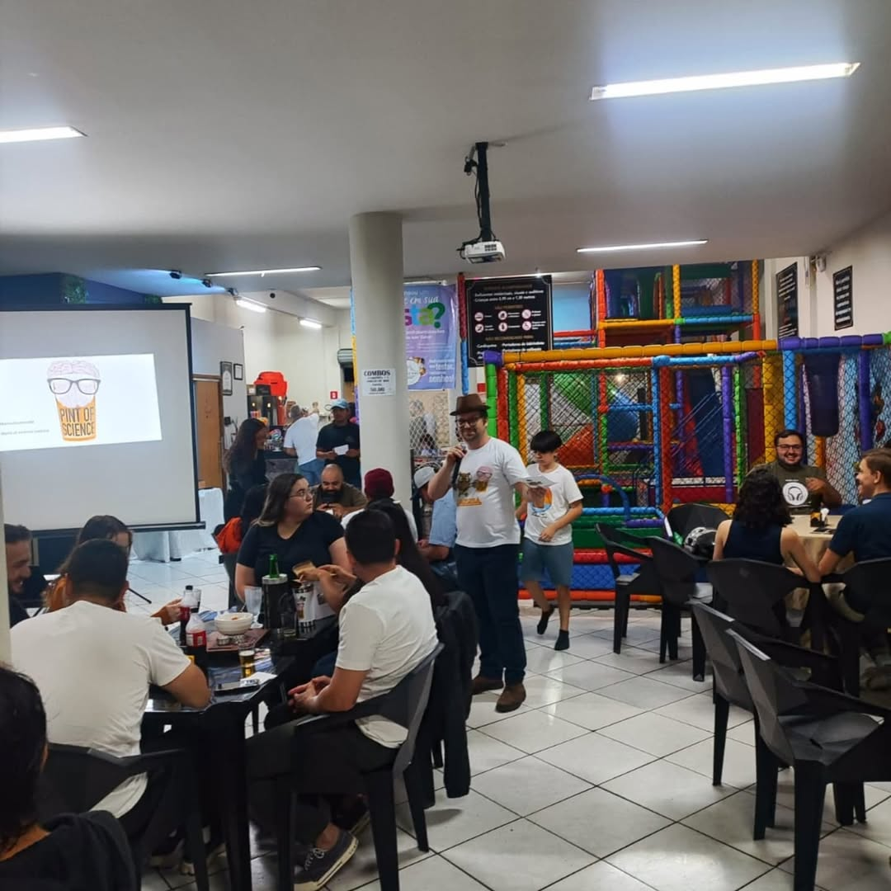

📌 Sobre o Evento:
O "Pint of Science" é um festival internacional que leva pesquisadores para bater um papo sobre ciência em bares, tornando temas complexos acessíveis e divertidos. Aqui, não há palestras formais – apenas debates descontraídos, com direito a drinks e muita interação!
🔬 O Que Aconteceu?
Em uma noite especial no bar, cientistas de diversas áreas compartilharam descobertas, curiosidades e até mistérios da ciência enquanto o público aproveitava um clima descontraído. Os temas variaram de neurociência a mudanças climáticas, sempre com espaço para perguntas e brindes!
